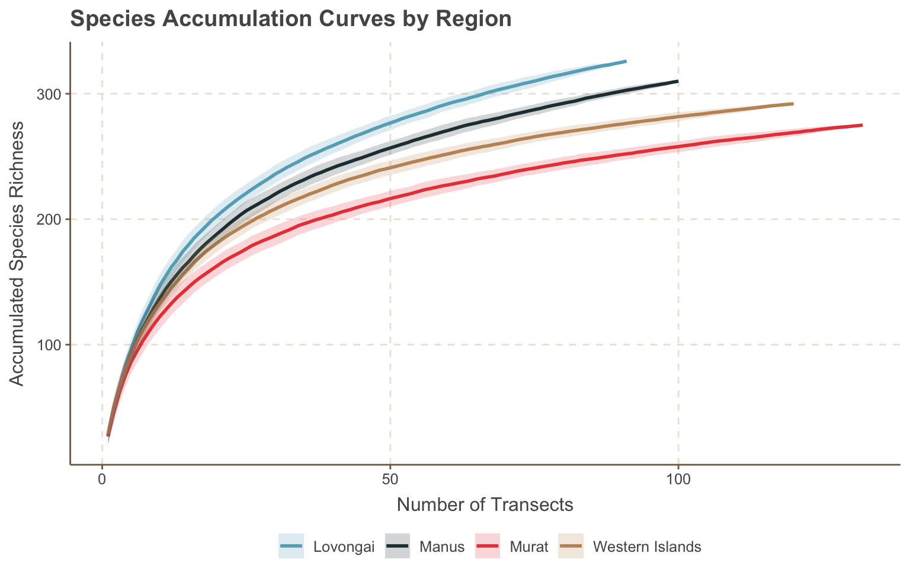
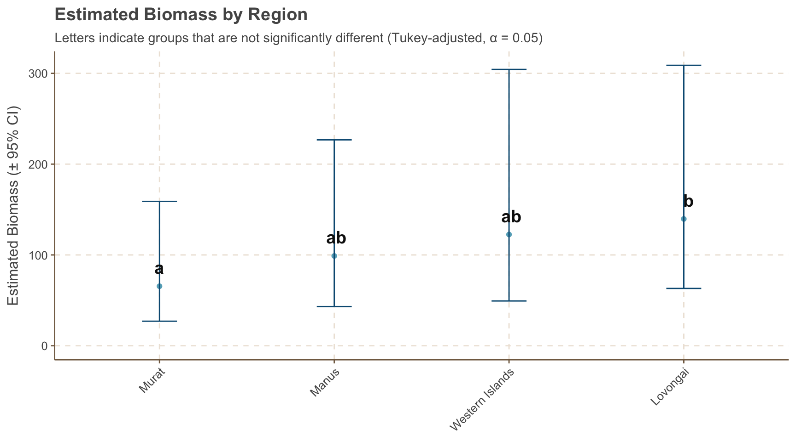

This document presents an exploratory analysis of fish survey data collected during the PNG-2024 scientific expedition. Our goal is to characterize patterns in reef fish community structure and composition, and to identify key drivers of species richness, abundance, and biomass across spatial and ecological gradients.
The dataset comprises standardized underwater visual survey (UVS) data collected across multiple islands, regions, and depth strata using consistent belt transect methods. Observers recorded individual fish counts, estimated lengths, and species-level taxonomic identifications. These were used to derive metrics of abundance (individuals per m²), biomass (grams per m²), and species richness per station.
stations |>group_by(region, habitat, depth_strata) |>summarise(n =n_distinct(ps_station_id), .groups ="drop") |>pivot_wider(names_from = habitat, values_from = n, values_fill =0) |>mutate(Total =rowSums(across(where(is.numeric)), na.rm =TRUE)) |>gt(groupname_col ="region") |>tab_header(title ="Summary of sampling effort by region",subtitle ="Number of stations surveyed by depth strata and habitat") |>tab_spanner(label ="Reef Habitats", columns =c("fore reef", "back reef", "channel", "patch reef")) |>tab_style(style =list(cell_fill(color ="#f0f0f0"),cell_text(weight ="bold")),locations =list(cells_column_labels(everything()),cells_column_spanners(spanners ="Reef Habitats"))) |>opt_table_font(font =list(gt::google_font("Roboto"), default_fonts())) |>opt_row_striping() |>tab_options(row_group.as_column = T,table.width =pct(100),table.font.size ="small") |>opt_vertical_padding(scale =0.7) |>tab_source_note(source_note ="Depth stratum: supershallow (< 6 m), shallow (7 - 15 m), and deep (>= 15 m).")
Table 1: Number of fish survey stations by habitat and depth strata
Summary of sampling effort by region
Number of stations surveyed by depth strata and habitat
depth_strata
Reef Habitats
Total
fore reef
back reef
channel
patch reef
Lovongai
shallow
16
3
0
0
19
deep
9
0
0
0
9
supershallow
1
0
0
0
1
Manus
shallow
15
0
1
1
17
supershallow
2
0
1
1
4
deep
13
0
0
2
15
Murat
deep
22
0
0
0
22
shallow
22
0
0
0
22
Western Islands
deep
25
1
0
0
26
shallow
27
2
0
0
29
supershallow
1
2
0
0
3
Depth stratum: supershallow (< 6 m), shallow (7 - 15 m), and deep (>= 15 m).
Subsequent sections will summarize the data by region and subregion, characterize the dominant taxa, evaluate sampling sufficiency, and explore spatial and ecological drivers of richness, abundance, biomass, and community structure.
2 Summary
2.1 Regional summary
The tables below (Table 2, Table 3) summarize survey coverage and observed patterns in species richness and abundance across regions and subregions. Metrics include the number of stations surveyed, total fish counted, and average richness, abundance, and biomass per station.
These summaries reveal distinct regional patterns in reef fish communities. Lovongai recorded the highest species richness and the greatest average fish biomass per station. In contrast, Murat exhibited the lowest richness and biomass. The Western Islands showed the highest fish abundance, but average biomass per station was comparable to Murat, suggesting smaller-bodied species dominate. Manus had the lowest overall abundance.
In the following sections, we explore spatial and ecological patterns in species richness, abundance, and biomass, focusing on variation across region, depth strata, and observer.
During the expedition, we recorded a total of 115,124.5 individual fish across 462 distinct taxa during standardized transect surveys. Species richness varied across regions with Lovongai exhibiting the highest number of taxa (330 species), followed by the Western Islands and Manus. Murat showed the lowest regional richness, with only 275 species observed.
Code
library(highcharter)lvl_opts <-list(list(level =1,borderWidth =0,borderColor ="transparent",dataLabels =list(enabled =TRUE,align ="left",verticalAlign ="top",style =list(fontSize ="12px", textOutline =FALSE,color ="#FFFCF9",fontWeight ="bold"))),list(level =2,borderWidth =0,borderColor ="transparent",colorVariation =list(key ="brightness", to =0.250),dataLabels =list(enabled =FALSE),style =list(fontSize ="9px",textOutline =FALSE, color ="#FFFCF9", fontWeight ="bold")))hc_data <- taxa_summary |>mutate(n =1) |>mutate_if(is.numeric, round,2) |>data_to_hierarchical(c(order, family), n)diversity_treemap <-hchart(hc_data,type ="treemap",allowDrillToNode =TRUE,levels = lvl_opts,tooltip =list(valueDecimals =FALSE)) |>hc_chart(style =list(fontFamily ="Roboto")) |>hc_title(text ="Number of fish species by order and family",align ="left",style =list(fontFamily ="Roboto", fontSize ="22px")) |>hc_size(height =500)diversity_treemap
Figure 2: Number of fish species by order and family
The most taxonomically rich families in our surveys were Labridae (wrasses, n = 80), and Pomacentridae (surgeonfishes, n = 78), followed by Chaetodontidae (butterflyfishes, n = 35) ,Acanthuridae (surgeonfishes, n = 32) and Scaridae (parrotfishes, 31) (Table 4)
Table 4: Summary of fish families observed during the expedition
Fish Families
Summary of fish families observed during the expedition
Some of the most commonly encountered species includede the bluestreak cleaner wrasse (Labroides dimidiatus, observed at 87% of stations), twospot surgeonfish (Ctenochaetus binotatus, 76%), and bicolor chromis (Pycnochromis margaritifer, 75%)(Table 5). These species were widespread across depth strata and regions.
In terms of numerical abundance, the most dominant taxa were the ternate chromis (Chromis ternatensis, 0.84 ind/m²), bicolor chromis (P. margaritifer, 0.73 ind/m²), and the darkfin chromis (Pycnochromis atripes, 0.43 ind/m²).
Biomass was dominated by larger-bodied taxa such as the sleek unicornfish (Naso hexacanthus, 25 g/m²), bigeye trevally (Caranx sexfasciatus, 22 g/m²), and rainbow runner (Elagatis bipinnulata, 17 g/m²), all of which contributed significantly to overall fish biomass despite lower numerical abundance.
We explore differences in community composition across regions in the next sections.
Table 5: Summary of fish species observed during the expedition
Fish species
Summary of fish species observed during the expedition
3 Species Richness
Code
# To ensure consistent sampling effort and clean estimation of observer effects, we excluded four stations surveyed by dual diver teams. These represented <3% of stations and were not systematically distributed across sites or regions.”richness_by_station <- biomass_by_station_and_taxa |>filter(!str_detect(common_family, "blennie|gobie")) |>left_join(stations) |>group_by(ps_site_id, ps_station_id, diver, region, subregion, n_transects, depth_strata) |>summarise(richness =n_distinct(accepted_aphia_id[avg_count >0]), .groups ="drop") |>filter(!str_detect(diver, "/"))
3.0.0.1 Did we sample enough?
To assess the completeness of our species inventories across regions, we generated species accumulation curves using stations as the sampling unit (Figure 3). These curves provide insight into whether our sampling effort was adequate to capture the underlying diversity in each region. They also help evaluate whether observed differences in species richness reflect genuine ecological patterns or are potentially driven by differences in survey effort or sampling completeness.
Code
library(vegan)# Species matrix with one row per station × regionspp_matrix <- biomass_by_station_and_taxa |>left_join(stations |>select(ps_station_id, region), by ="ps_station_id") |>filter(avg_count >0) |>select(region, ps_station_id, accepted_name, avg_count) |>pivot_wider(names_from = accepted_name, values_from = avg_count, values_fill =0) |>distinct(ps_station_id, .keep_all =TRUE) |># Keep one row per stationnest(data =-region)# 2. Species accumulation per regionaccum_curves <- spp_matrix |>mutate(acc =map(data, ~specaccum(select(.x, where(is.numeric)), method ="random")),curve =map(acc, ~tibble(station_number = .x$sites,richness = .x$richness,sd = .x$sd))) |>select(region, curve) |>unnest(curve)# 3. Plotggplot(accum_curves, aes(x = station_number, y = richness, color = region, fill = region)) +geom_line(linewidth =1) +geom_ribbon(aes(ymin = richness - sd, ymax = richness + sd), alpha =0.2, color =NA) +labs(title ="Species Accumulation Curves by Region",x ="Number of Stations",y ="Accumulated Species Richness") +theme_minimal(base_size =14)+theme(legend.position ="bottom")+labs(fill ="", col ="")

Figure 3: Species accumulation curves by region
The species accumulation curves for all four regions display a steady increase in observed richness with additional sampling effort, with none reaching a clear asymptote. This suggests that the species inventories from these surveys remain incomplete. Lovongai and Manus exhibit the steepest accumulation trajectories, indicating both higher species richness and potentially greater under-sampling relative to their true diversity. In contrast, the slower but still-rising curves for Murat and the Western Islands imply lower overall richness but similarly incomplete sampling coverage.
3.0.0.2 Differences across depth strata, divers, and regions?
Let look at some initial exploratory plots of species richness by depth strata, diver, and region.
ggstatsplot::ggbetweenstats(data = richness_by_station, x = depth_strata, y = richness, mean.ci =TRUE,pairwise.comparisons =TRUE,p.adjust.method ="holm",type ="nonparametric",title ="Species richness by depth strata", xlab ="", ylab ="Number of species per station")
Figure 4: Species richnnes by depth strata
Code
ggstatsplot::ggbetweenstats(data = richness_by_station, x = diver, y = richness, mean.ci =TRUE,pairwise.comparisons =TRUE,p.adjust.method ="holm",type ="nonparametric",title ="Species richness by diver", xlab ="", ylab ="Number of species per station")
Figure 5: Species richnnes by diver
Code
ggstatsplot::ggbetweenstats(data = richness_by_station, x = region, y = richness, mean.ci =TRUE,pairwise.comparisons =TRUE,p.adjust.method ="holm",type ="nonparametric",title ="Species richness by region", xlab ="", ylab ="Number of species per station")
Figure 6: Species richnnes by region
To investigate the drivers of species richness across stations, we fit a linear mixed-effects model with region, depth, diver, and sampling effort as predictors, accounting for repeated observations within sites (Table 6).
The species richness model revealed strong observer effects (χ² = 8.8, p < 0.001) and modest but statistically significant differences across regions (χ² = 3.3, p = 0.024). Sampling effort (χ² = 42.9, p < 0.001) was, as expected, a major predictor of richness—indicating that increasing the number of transects substantially boosts the number of species detected. In contrast, depth strata had no discernible effect on richness (χ² = 0.08, p = 0.92), suggesting that species richness remained consistent across depth zones.
Key findings:
Sampling effort: Richness increased strongly with the number of transects (β = 13.91, p < 0.001), confirming the expected positive relationship between effort and species detection.
Observer effect: Diver identity was the strongest predictor of species richness after sampling effort. Compared to Alan Friedlander (reference):
Allison Green recorded ~12 fewer species per station on average (β = –12.10, p < 0.001),
Jenn Caselle recorded ~7 fewer species (β = –6.94, p = 0.072),
Estimated marginal means show the highest richness for Friedlander (58.0 spp), followed by Caselle (51.1), Green (45.9), McKinnis (43.1), and Summers (40.3).
Pairwise contrasts confirmed statistically significant differences between Friedlander and both Green (p < 0.001) and Summers (p = 0.028).
Regional differences: Species richness was modestly influenced by region (χ² = 3.3, p = 0.024).
Estimated marginal means indicate slightly lower richness in Murat (41.8 spp) compared to Lovongai (48.7), Manus (48.6), and the Western Islands (51.6).
The pairwise difference between Murat and Western Islands approached significance (p = 0.055), suggesting a possible regional signal.
spp_model_emm_diver |>cld(adjust ="tukey", Letters = letters, alpha =0.05) |>ggplot(aes(x =reorder(diver, emmean), y = emmean))+geom_point()+geom_errorbar(aes(ymin = lower.CL, ymax = upper.CL), width =0.2, color ="#F08A4B")+geom_text(aes(label = .group), vjust =-1, size =5, fontface ="bold")+labs(title ="Estimated Species Richness by Diver",subtitle ="Letters indicate groups that are not significantly different (Tukey-adjusted, α = 0.05)",x =NULL,y ="Estimated richness (± 95% CI)") +theme_minimal(base_size =13) +expand_limits(y =0)+theme(axis.text.x =element_text(angle =45, hjust =1))
Figure 7: Estimated marginal means of species richness by diver, adjusted for differences in sampling effort, depth strata, and region (± 95% CI). Letters indicate statistically distinct groups based on Tukey-adjusted pairwise comparisons
Code
spp_model_emm_region |>cld(adjust ="tukey", Letters = letters, alpha =0.05) |>ggplot(aes(x =reorder(region, emmean), y = emmean))+geom_point()+geom_errorbar(aes(ymin = lower.CL, ymax = upper.CL), width =0.2, color ="#065A82")+geom_text(aes(label = .group), vjust =-1, hjust =0.05, size =5, fontface ="bold")+labs(title ="Estimated Species Richness by Region",subtitle ="Letters indicate groups that are not significantly different (Tukey-adjusted, α = 0.05)",x =NULL,y ="Estimated richness (± 95% CI)") +theme_minimal(base_size =13) +expand_limits(y =0)+theme(axis.text.x =element_text(angle =45, hjust =1))
Figure 8: Estimated marginal means of species richness by region, adjusted for differences in sampling effort, depth strata, and region (± 95% CI). Letters indicate statistically distinct groups based on Tukey-adjusted pairwise comparisons
ggstatsplot::ggbetweenstats(data = abundance_by_station, x = depth_strata, y = avg_count_m2, mean.ci =TRUE,pairwise.comparisons =TRUE,p.adjust.method ="holm",type ="nonparametric",title ="Numerical abundance by depth strata", xlab ="", ylab ="Average abundance (ind/m2) per station")
Figure 9: Numerical abundance by depth strata
Code
ggstatsplot::ggbetweenstats(data = abundance_by_station, x = diver, y = avg_count_m2, mean.ci =TRUE,pairwise.comparisons =TRUE,p.adjust.method ="holm",type ="nonparametric",title ="Numerical abundance by diver", xlab ="", ylab ="Average abundance (ind/m2) per station")
Figure 10: Numerical abundance by diver
Code
ggstatsplot::ggbetweenstats(data = abundance_by_station, x = region, y = avg_count_m2, mean.ci =TRUE,pairwise.comparisons =TRUE,p.adjust.method ="holm",type ="nonparametric",title ="Numerical abundance by region", xlab ="", ylab ="Average abundance (ind/m2) per station")
Figure 11: Numerical abundance by region
We modeled average fish abundance (individuals per m²) at the station level using a generalized linear mixed-effects model (GLMM) with a Gamma distribution and log link. The model included fixed effects for depth strata, diver, region, and sampling effort (number of transects), and a random intercept for site ID (Table 7).
The abundance model revealed strong observer effects (χ² = 45.9, p < 0.001), a significant influence of depth strata (χ² = 9.1, p = 0.010), and moderate regional variation in fish abundance (χ² = 10.7, p = 0.013). Sampling effort (number of transects) had no detectable effect (χ² = 0.15, p = 0.70), indicating that the per-area standardization (ind/m²) effectively controls for variation in sampling intensity.
Key findings:
Depth effect: Shallow sites had ~21% higher abundance than deep sites (β = 0.19, p = 0.004).
Observer effect: Diver identity had a strong influence on abundance estimates. Compared to Alan Friedlander (reference):
Allison Green recorded ~41% lower abundance (β = –0.53, p < 0.001),
Jenn Caselle recorded similar abundance (β = –0.05, p = 0.88),
Estimated marginal means show abundance values of 5.3 ind/m² (Friedlander), 4.3 (Caselle), 3.1 (Green).
Significant pairwise differences were detected between Friedlander and Green (p < 0.001), Summers (p = 0.005), and McKinnis (p = 0.0003).
Regional differences: Manus exhibited significantly lower abundance than the Western Islands (p = 0.013), while other pairwise contrasts were not statistically significant.
Estimated marginal means indicate the highest abundance in the Western Islands (2.89 ind/m²), followed by Lovongai (2.50), Murat (2.31), and Manus (1.53).Although Lovongai and Murat had moderately higher abundance than Manus (1.6× and 1.5×, respectively), these differences were not significant after adjustment for multiple comparisons (Figure 13).
abun_model_emmeans <-emmeans(abund_model, pairwise ~ diver, type ="response")abun_model_emmeans$emmeans |>cld(adjust ="tukey", Letters = letters, alpha =0.05, type ="response") |>ggplot(aes(x =reorder(diver, response), y = response))+geom_point()+geom_errorbar(aes(ymin = asymp.LCL, ymax = asymp.UCL), width =0.2, color ="#F08A4B")+geom_text(aes(label = .group), vjust =-1, size =5, fontface ="bold")+labs(title ="Estimated Numerical Abundance by Diver",subtitle ="Letters indicate groups that are not significantly different (Tukey-adjusted, α = 0.05)",x =NULL,y ="Estimated Numerical Abundance (± 95% CI)") +theme_minimal(base_size =13) +expand_limits(y =0)+theme(axis.text.x =element_text(angle =45, hjust =1))
Figure 12: Estimated marginal means of average numerical abundance by diver, adjusted for differences in sampling effort, depth strata, and region (± 95% CI). Letters indicate statistically distinct groups based on Tukey-adjusted pairwise comparisons
Code
abun_model_emmeans_diver <-emmeans(abund_model, pairwise ~ diver, type ="response")abun_model_emmeans <-emmeans(abund_model, pairwise ~ region, type ="response")abun_model_emmeans$emmeans |>cld(adjust ="tukey", Letters = letters, alpha =0.05, type ="response") |>ggplot(aes(x =reorder(region, response), y = response))+geom_point()+geom_errorbar(aes(ymin = asymp.LCL, ymax = asymp.UCL), width =0.2, color ="#F08A4B")+geom_text(aes(label = .group), vjust =-1, size =5, fontface ="bold")+labs(title ="Estimated Numerical Abundance by Region",subtitle ="Letters indicate groups that are not significantly different (Tukey-adjusted, α = 0.05)",x =NULL,y ="Estimated Numerical Abundance (± 95% CI)") +theme_minimal(base_size =13) +expand_limits(y =0)+theme(axis.text.x =element_text(angle =45, hjust =1))
Figure 13: Estimated marginal means of average numerical abundance by region, adjusted for differences in sampling effort, depth strata, and diver (± 95% CI). Letters indicate statistically distinct groups based on Tukey-adjusted pairwise comparisons
ggstatsplot::ggbetweenstats(data = biomass_by_station, x = depth_strata, y = avg_biomass_m2, mean.ci =TRUE,pairwise.comparisons =TRUE,p.adjust.method ="holm",type ="nonparametric",title ="Fish biomass by depth strata", xlab ="", ylab ="Fish biomass (g/m2) per station")
Figure 14: Fish biomass by depth strata
Code
ggstatsplot::ggbetweenstats(data = biomass_by_station, x = diver, y = avg_biomass_m2, mean.ci =TRUE,pairwise.comparisons =TRUE,p.adjust.method ="holm",type ="nonparametric",title ="Fish biomass by diver", xlab ="", ylab ="Fish biomass (h/m2) per station")
Figure 15: Fish biomass by diver
Code
ggstatsplot::ggbetweenstats(data = biomass_by_station, x = region, y = avg_biomass_m2, mean.ci =TRUE,pairwise.comparisons =TRUE,p.adjust.method ="holm",type ="nonparametric",title ="Fish biomass by region", xlab ="", ylab ="Fish biomass (g/m2) per station")
Figure 16: Fish biomass by region
We modeled fish biomass (g/m²) at the station level using a generalized linear mixed-effects model (GLMM) with a Gamma distribution and log link. The model included fixed effects for depth strata, diver, region, and sampling effort (number of transects), and a random intercept for site ID (Table 8).
The biomass model revealed strong observer effects (χ² = 25.5, p < 0.001), a significant influence of depth strata (χ² = 8.2, p = 0.016), and marginal regional variation in fish biomass (χ² = 7.5, p = 0.059). Sampling effort (number of transects) had no detectable effect (χ² = 0.93, p = 0.34), indicating that the per-area biomass standardization (g/m²) appropriately controls for effort-related variation.
Key findings:
Depth effect: Shallow sites had ~21% lower fish biomass than deep sites (β = –0.24, p = 0.007), contrasting with patterns observed in numerical abundance
Observer effect: Diver identity had a strong influence on biomass estimates. Compared to Alan Friedlander (reference):
Allison Green recorded ~35% lower biomass (β = –0.44, p = 0.003),
Jenn Caselle recorded ~57% lower biomass (β = –0.84, p < 0.001).
Estimated marginal means show biomass values of 357 g/m² (Friedlander), 231 g/m² (Green), and 155 g/m² (Caselle), with differences between Friedlander and both Green (p = 0.029) and Caselle (p = 0.007) statistically significant.
Regional differences: Biomass in Murat was significantly lower than in Lovongai (β = –0.72, p = 0.009). Manus showed a non-significant negative trend, and the Western Islands did not differ from Lovongai.
Estimated marginal means indicate highest biomass in Lovongai (178 g/m²), followed by the Western Islands (152 g/m²), Manus (129 g/m²), and Murat (87 g/m²). Only Murat was significantly different from Lovongai (Figure 18)
biomass_model_emmeans_diver <-emmeans(biomass_model, pairwise ~ diver, type ="response")biomass_model_emmeans_diver$emmeans |>cld(adjust ="tukey", Letters = letters, alpha =0.05, type ="response") |>ggplot(aes(x =reorder(diver, response), y = response))+geom_point()+geom_errorbar(aes(ymin = asymp.LCL, ymax = asymp.UCL), width =0.2, color ="#F08A4B")+geom_text(aes(label = .group), vjust =-1, size =5, fontface ="bold")+labs(title ="Estimated Biomass by Diver",subtitle ="Letters indicate groups that are not significantly different (Tukey-adjusted, α = 0.05)",x =NULL,y ="Estimated Biomass (± 95% CI)") +theme_minimal(base_size =13) +expand_limits(y =0)+theme(axis.text.x =element_text(angle =45, hjust =1))
Figure 17: Estimated marginal means of average biomass by diver, adjusted for differences in sampling effort, depth strata, and region (± 95% CI). Letters indicate statistically distinct groups based on Tukey-adjusted pairwise comparisons
Code
biomass_model_emmeans <-emmeans(biomass_model, pairwise ~ region, type ="response")biomass_model_emmeans$emmeans |>cld(adjust ="tukey", Letters = letters, alpha =0.05, type ="response") |>ggplot(aes(x =reorder(region, response), y = response))+geom_point()+geom_errorbar(aes(ymin = asymp.LCL, ymax = asymp.UCL), width =0.2, color ="#F08A4B")+geom_text(aes(label = .group), vjust =-1, size =5, fontface ="bold")+labs(title ="Estimated Biomass by Region",subtitle ="Letters indicate groups that are not significantly different (Tukey-adjusted, α = 0.05)",x =NULL,y ="Estimated Biomass (± 95% CI)") +theme_minimal(base_size =13) +expand_limits(y =0)+theme(axis.text.x =element_text(angle =45, hjust =1))

Figure 18: Estimated marginal means of average biomass by region, adjusted for differences in sampling effort, depth strata, and diver (± 95% CI). Letters indicate statistically distinct groups based on Tukey-adjusted pairwise comparisons
6 Trophic Composition
This section explores the distribution of fish biomass and abundance across major trophic groups, offering insight into the functional structure of reef fish assemblages and potential indicators of ecosystem health.
Code
library(plotly)#| label: fig-troph-by-region#| fig-cap: "Trophic composition by region"#| fig-width: 9trophic_palette <-c("Herbivore/Detritivore"="#5C9E5C", # Earthy green (natural, calming)"Planktivore"="#4C9CB2", # Soft teal-blue (planktivores)"Lower-carnivore"="#E1B07E", # Sandy ochre (mid-level predator)"Top-predator"="#C75D4D", # Muted brick red (assertive but not harsh)"Shark"="#7E6FAB", # Deep slate violet (distinctive, dignified)"NA"="#D0D0D0") # Light neutral gray (non-disruptive)biomass_by_station_and_trophic <- biomass_by_station_and_taxa |>group_by(ps_station_id, depth_strata, trophic_group) |>summarize(total_biomass_m2 =sum(avg_biomass_m2),total_count_m2 =sum(avg_count_m2),.groups ="drop") |>group_by(ps_station_id, depth_strata) |>mutate(frac_biomass = total_biomass_m2/sum(total_biomass_m2),frac_count = total_count_m2/sum(total_count_m2)) |>left_join(stations |>distinct(ps_station_id, region, subregion), by ="ps_station_id") |>ungroup()biomass_by_region_and_trophic <- biomass_by_station_and_trophic |>group_by(region, subregion, trophic_group) |>summarize(avg_biomass_m2 =mean(total_biomass_m2),avg_count_m2 =mean(total_count_m2),.groups ="drop") p <- biomass_by_region_and_trophic |>ggplot(aes(fct_reorder(subregion, avg_count_m2, sum, .desc = T), avg_count_m2, fill = trophic_group))+geom_col(aes(text =paste0("Region: ", region, "<br>","Subregion: ", subregion, "<br>","Trophic group: ", trophic_group, "<br>","Avg. Abundance: ", round(avg_biomass_m2, 2), " ind/m²" )))+facet_wrap(~region, ncol =4, scales ="free_x") +labs(x ="", y ="Average Abundance (in/m²)", fill ="",title ="Average fish Abundance by trophic group and region",subtitle ="Stacked bar plots show the contribution of each trophic group to total abundance")+theme(axis.text.x =element_text(angle =45, hjust =1),legend.position ="bottom",legend.box ="horizontal")+guides(fill =guide_legend(nrow =1, byrow =TRUE))+scale_fill_manual(values = trophic_palette)# Convert to plotly with tooltipsggplotly(p, tooltip ="text") |>layout(legend =list(orientation ="h",xanchor ="center",x =0.5,y =-0.2,title =list(text ="")))
Code
library(plotly)# Prepare the summarized dataplot_data <- biomass_by_station_and_trophic |>group_by(region, subregion, trophic_group) |>summarize(avg_biomass_m2 =mean(total_biomass_m2), .groups ="drop") |>mutate(subregion =fct_reorder(subregion, avg_biomass_m2, .fun = sum, .desc =TRUE))# Build the ggplotp <-ggplot(plot_data, aes(x = subregion, y = avg_biomass_m2, fill = trophic_group)) +geom_col(aes(text =paste0("Region: ", region, "<br>","Subregion: ", subregion, "<br>","Trophic group: ", trophic_group, "<br>","Avg. biomass: ", round(avg_biomass_m2, 2), " g/m²" ))) +facet_wrap(~region, ncol =4, scales ="free_x") +labs(x ="", y ="Average biomass (g/m²)", fill ="",title ="Average fish biomass by trophic group and region",subtitle ="Stacked bar plots show the contribution of each trophic group to total biomass") +scale_fill_manual(values = trophic_palette) +theme_minimal(base_size =13) +theme(axis.text.x =element_text(angle =45, hjust =1),legend.position ="bottom",legend.box ="horizontal") +guides(fill =guide_legend(nrow =1, byrow =TRUE))# Convert to plotly with tooltipsggplotly(p, tooltip ="text") |>layout(legend =list(orientation ="h",xanchor ="center",x =0.5,y =-0.2,title =list(text ="")))
Figure 19: Trophic composition by island
To test whether the relative biomass of trophic groups differed significantly among regions, we used Kruskal-Wallis tests for each group. Only planktivores showed a moderate regional effect (χ² = 9.16, p = 0.027). Post hoc comparisons indicated that the proportional biomass of planktivores was higher in Lovongai than in other regions, but these differences did not remain significant after correcting for multiple comparisons (padj = 0.051 for Lovongai vs Western Islands). We found no evidence for regional differences in the proportion of biomass contributed by top predators or sharks, two key indicators of reef health.
Code
kruskal_results <- biomass_by_station_and_trophic |>filter(!is.na(trophic_group)) |>group_by(trophic_group) |> rstatix::kruskal_test(frac_biomass ~ region)# Filter for Planktivores and run pairwise comparisonsdunn_results <- biomass_by_station_and_trophic |>ungroup() |>filter(trophic_group =="Planktivore") |>mutate(region =as.factor(region)) |> rstatix::dunn_test(frac_biomass ~ region, p.adjust.method ="bonferroni")biomass_by_station_and_trophic |>filter(!is.na(trophic_group)) |>ggplot() +geom_boxplot(aes(x = region, y = frac_biomass, fill = trophic_group),outlier.shape =NA, alpha =0.6)+geom_jitter(aes(x = region, y = frac_biomass, color = trophic_group),position =position_jitterdodge(jitter.width =0.2, dodge.width =0.75),size =1.5,alpha =0.6,show.legend =FALSE)+labs(title ="Proportion of Biomass by Trophic Group and Region",y ="Proportion of Total Biomass",x =NULL,fill ="") +scale_fill_manual(values = trophic_palette)+scale_color_manual(values = trophic_palette)+theme(axis.text.x =element_text(angle =45, hjust =1),legend.position ="top",legend.direction ="horizontal",legend.title =element_text(face ="bold"),legend.box ="horizontal",legend.text =element_text(size =11),legend.spacing.x =unit(0.4, "cm")) +guides(fill =guide_legend(nrow =1, byrow =TRUE))
Figure 20: Proportion of Biomass by Trophic Group and Region
We evaluated multivariate differences in trophic structure using PERMANOVA. Depth strata emerged as the strongest predictor of trophic composition (R² = 7.9%, F = 7.20, p = 0.001), followed by region (R² = 3.4%, F = 2.07, p = 0.028). Together, these variables explained ~11% of the total variation, with the remainder attributed to within-region and within-strata heterogeneity.
Finally, we used non-metric multidimensional scaling (NMDS) to visualize patterns in trophic composition across sites. Ordination revealed clustering by depth strata, confirming the PERMANOVA results. Vector fitting indicated that three trophic groups were significantly associated with the ordination space (all p < 0.05), with vector length proportional to explanatory power (R² > 0.8). These results emphasize depth-driven shifts in functional structure, with moderate but detectable regional variation.
Code
# 1. NMDSnmds_result <-metaMDS(trophic_matrix, distance ="bray", k =2, trymax =100)
Run 0 stress 0.1411891
Run 1 stress 0.1447391
Run 2 stress 0.1590019
Run 3 stress 0.1528555
Run 4 stress 0.1460049
Run 5 stress 0.1421378
Run 6 stress 0.1630242
Run 7 stress 0.1640943
Run 8 stress 0.1526872
Run 9 stress 0.1479767
Run 10 stress 0.1556632
Run 11 stress 0.1432057
Run 12 stress 0.1471095
Run 13 stress 0.1571192
Run 14 stress 0.1568703
Run 15 stress 0.1727393
Run 16 stress 0.1536667
Run 17 stress 0.1555327
Run 18 stress 0.1480026
Run 19 stress 0.1616108
Run 20 stress 0.1541177
Run 21 stress 0.146005
Run 22 stress 0.1427452
Run 23 stress 0.1641165
Run 24 stress 0.1433832
Run 25 stress 0.1513878
Run 26 stress 0.1524238
Run 27 stress 0.148985
Run 28 stress 0.1685437
Run 29 stress 0.1404731
... New best solution
... Procrustes: rmse 0.009485728 max resid 0.1205097
Run 30 stress 0.155404
Run 31 stress 0.1700972
Run 32 stress 0.1684261
Run 33 stress 0.1515738
Run 34 stress 0.1422854
Run 35 stress 0.1547407
Run 36 stress 0.1477963
Run 37 stress 0.1492064
Run 38 stress 0.141188
Run 39 stress 0.1458477
Run 40 stress 0.1610406
Run 41 stress 0.1470306
Run 42 stress 0.1655183
Run 43 stress 0.166345
Run 44 stress 0.144739
Run 45 stress 0.1678239
Run 46 stress 0.1460047
Run 47 stress 0.1530578
Run 48 stress 0.1391195
... New best solution
... Procrustes: rmse 0.0162062 max resid 0.2061752
Run 49 stress 0.1460048
Run 50 stress 0.1488073
Run 51 stress 0.1559376
Run 52 stress 0.3777101
Run 53 stress 0.1391194
... New best solution
... Procrustes: rmse 0.0000418081 max resid 0.000382134
... Similar to previous best
*** Best solution repeated 1 times